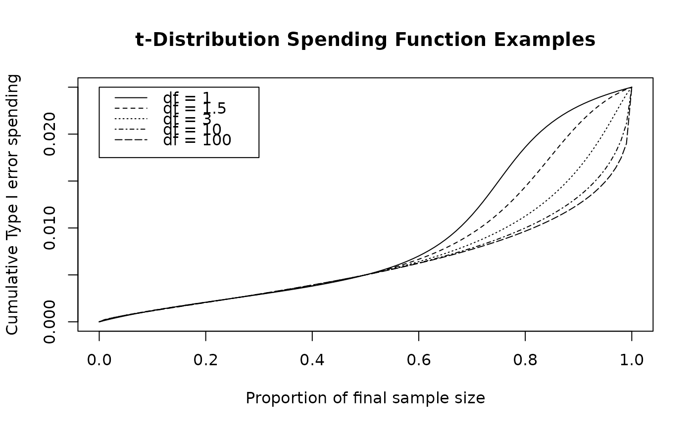

The function sfTDist() provides perhaps the maximum flexibility among
spending functions provided in the gsDesign package. This function
allows fitting of three points on a cumulative spending function curve; in
this case, six parameters are specified indicating an x and a y coordinate
for each of 3 points. Normally this function will be passed to
gsDesign() in the parameter sfu for the upper bound or
sfl for the lower bound to specify a spending function family for a
design. In this case, the user does not need to know the calling sequence.
The calling sequence is useful, however, when the user wishes to plot a
spending function as demonstrated below in examples.
The t-distribution spending function takes the form $$f(t;\alpha)=\alpha
F(a+bF^{-1}(t))$$ where \(F()\) is a cumulative t-distribution function
with df degrees of freedom and \(F^{-1}()\) is its inverse.
Arguments
- alpha
Real value \(> 0\) and no more than 1. Normally,
alpha=0.025for one-sided Type I error specification oralpha=0.1for Type II error specification. However, this could be set to 1 if for descriptive purposes you wish to see the proportion of spending as a function of the proportion of sample size/information.- t
A vector of points with increasing values from 0 to 1, inclusive. Values of the proportion of sample size/information for which the spending function will be computed.
- param
In the three-parameter specification, the first paramater (a) may be any real value, the second (b) any positive value, and the third parameter (df=degrees of freedom) any real value 1 or greater. When
gsDesign()is called with a t-distribution spending function, this is the parameterization printed. The five parameter specification isc(t1,t2,u1,u2,df)where the objective is that the resulting cumulative proportion of spending attrepresented bysf(t)satisfiessf(t1)=alpha*u1,sf(t2)=alpha*u2. The t-distribution used hasdfdegrees of freedom. In this parameterization, all the first four values must be between 0 and 1 andt1 < t2,u1 < u2. The final parameter is any real value of 1 or more. This parameterization can fit any two points satisfying these requirements. The six parameter specification attempts to fit 3 points, but does not have flexibility to fit any three points. In this case, the specification forparamis c(t1,t2,t3,u1,u2,u3) where the objective is thatsf(t1)=alpha*u1,sf(t2)=alpha*u2, andsf(t3)=alpha*u3. See examples to see what happens when points are specified that cannot be fit.
Note
The gsDesign technical manual is available at https://keaven.github.io/gsd-tech-manual/.
References
Jennison C and Turnbull BW (2000), Group Sequential Methods with Applications to Clinical Trials. Boca Raton: Chapman and Hall.
Author
Keaven Anderson keaven_anderson@merck.com
Examples
library(ggplot2)
# 3-parameter specification: a, b, df
sfTDist(1, 1:5 / 6, c(-1, 1.5, 4))$spend
#> [1] 0.02851967 0.08253974 0.18695048 0.38823035 0.72415039
# 5-parameter specification fits 2 points, in this case
# the 1st 2 interims are at 25% and 50% of observations with
# cumulative error spending of 10% and 20%, respectively
# final parameter is df
sfTDist(1, 1:3 / 4, c(.25, .5, .1, .2, 4))$spend
#> [1] 0.1000000 0.2000000 0.3724396
# 6-parameter specification fits 3 points
# Interims are at 25%. 50% and 75% of observations
# with cumulative spending of 10%, 20% and 50%, respectively
# Note: not all 3 point combinations can be fit
sfTDist(1, 1:3 / 4, c(.25, .5, .75, .1, .2, .5))$spend
#> [1] 0.1000000 0.2000000 0.5000006
# Example of error message when the 3-points specified
# in the 6-parameter version cannot be fit
try(sfTDist(1, 1:3 / 4, c(.25, .5, .75, .1, .2, .3))$errmsg)
#> Error in sfTDist(1, 1:3/4, c(0.25, 0.5, 0.75, 0.1, 0.2, 0.3)) :
#> 6-parameter specification of t-distribution spending function did not produce a solution
# sfCauchy (sfTDist with 1 df) and sfNormal (sfTDist with infinite df)
# show the limits of what sfTdist can fit
# for the third point are u3 from 0.344 to 0.6 when t3=0.75
sfNormal(1, 1:3 / 4, c(.25, .5, .1, .2))$spend[3]
#> [1] 0.3439558
sfCauchy(1, 1:3 / 4, c(.25, .5, .1, .2))$spend[3]
#> [1] 0.6
# plot a few t-distribution spending functions fitting
# t=0.25, .5 and u=0.1, 0.2
# to demonstrate the range of flexibility
t <- 0:100 / 100
plot(t, sfTDist(0.025, t, c(.25, .5, .1, .2, 1))$spend,
xlab = "Proportion of final sample size",
ylab = "Cumulative Type I error spending",
main = "t-Distribution Spending Function Examples", type = "l"
)
lines(t, sfTDist(0.025, t, c(.25, .5, .1, .2, 1.5))$spend, lty = 2)
lines(t, sfTDist(0.025, t, c(.25, .5, .1, .2, 3))$spend, lty = 3)
lines(t, sfTDist(0.025, t, c(.25, .5, .1, .2, 10))$spend, lty = 4)
lines(t, sfTDist(0.025, t, c(.25, .5, .1, .2, 100))$spend, lty = 5)
legend(
x = c(.0, .3), y = .025 * c(.7, 1), lty = 1:5,
legend = c("df = 1", "df = 1.5", "df = 3", "df = 10", "df = 100")
)
